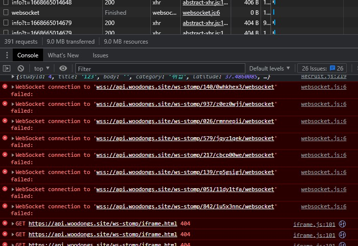
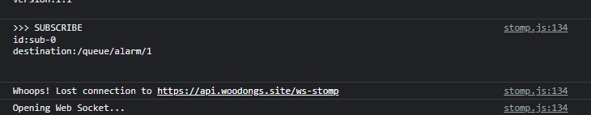
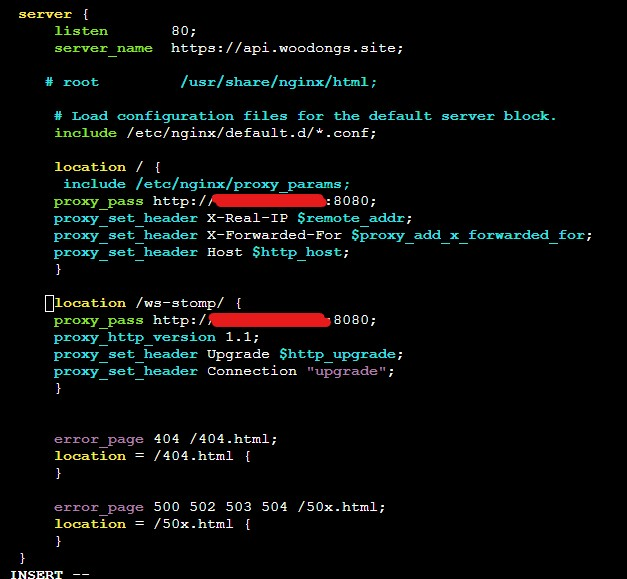
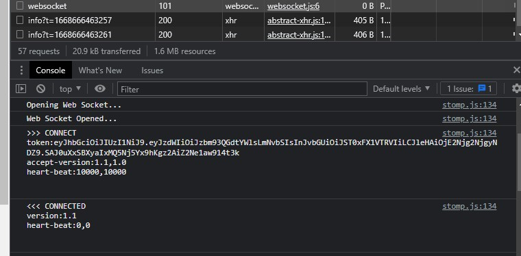

Web socket 404
메인 프로젝트 에러 핸들링
이전에 자동 배포까지 적용하고 나서 줄곧 거슬렸던 에러가 있었는데 오늘 팀원들과 오랜만에 모여서 이슈 대응을 해보려 했다. 일단 기본적인 증상으로는 아래의 이미지처럼 WebSocket 연결이 안된다는 에러 메시지와 iframe.html에 GET 요청 시 404 에러가 나는 점이었다.
또 idle 상황에서도 계속해서 서버로 요청이 간다는 점도 이상했다. 순식간에 300번의 요청이 일어나는 점을 보아 정확히 어떤 이유인지는 몰라도 뭔가 대단히 잘못되고 있다는 점은 확실하게 알 수 있었다.
screenshot 1


WebSocket-Stomp를 사용한 알림 기능과 채팅 기능은 백엔드 팀원분께서 담당해서 진행했기 때문에 아무래도 나는 이해도가 좀 떨어졌다. 따라서 후딱 찾아서 간단하게 특징만 정리해봤다.
간략하게 보면 WebSocket은 Client와 Server 사이에서 단일 TCP 연결을 통해 양방향 수신을 가능하게 해주는 프로토콜이라고 보면 된다. HTTP와는 다른 TCP 프로토콜 이지만 80번 포트나 443번 포트를 사용하고 기존 방화벽 설정을 사용할 수 있게 해줘 결국 HTTP에서 사용할 수 있도록 해준다.
WebSocket & Stomp 간략 특징
WebSocket
* HTTP와 초기 연결을 위한 한 번의 Handshake를 하고 그 이후로는 계속 TCP Connection을 통해 통신함 (비동기로 계속 이루어지는 듯)
* HTTP/1.1 규격 사용
* HTTP Request에 Upgrade헤더를 넣어야 한다.
* Upgrade 헤더를 적용하면 Connection헤더도 같이 전송해야 한다
* 응답은 200이 아닌 101로 들어온다
* 메시지의 내용과 규격을 정의하지 않는다 (어떤 요청인지, 어떤 포맷인지, 어떤 통신 과정인지 모름)
* 즉 하나하나씩 설정을 적용해야 한다
Stomp(Simple Text Oriented Messaging Protocol) * STOMP를 사용해 내용, 형식, 규격이 있는 메시지로 보낼 수 있다 (WebSocket 단일 채팅 구현보다 편함) * subscribe와 publish로 발신자와 수신자를 판별할 수 있다 * Stomp는 메모리 기반 브로커 (Kafka, RabbitMQ, ActiveMQ 같은 메시지 기반 시스템도 있음)
간단하게 포인트만 찾아봤는데 코드를 분석하면서 추가로 공부할 필요가 느껴졌다. 한번 훑고 가긴 아까움.
원인과 해결
백엔드 팀원분께서 로컬에서 실행했을 때는 에러가 안 뜨는데 AWS 환경에서만 에러가 나온다고 해서
클라이언트 -> 서버로 가는 요청 중간에 뭔가 문제가 있는 듯했다.
또한 WebSocket은 항상 응답으로 101을 반환해야 하는데 finished라고 뜨는 점도 수상했다. 다른 하나의 힌트는 f12의 관리자 도구에서 볼 수 있었는데
Woops! Lost connection to https://api.woodongs.site/ws-stomp라는 에러가 출력되고 있어서 범위를 경로 문제로 먼저 한정 지어 체크해보기로 했다.
요청 중간에 있을 만한 것은 Nginx밖에 없다고 생각되어 Nginx.conf 파일을 열어서 확인해보니 프록시를 설정하는 부분에서 모든 요청을 서버로 보내되
X-Real-IP, X-Forwarded-For, Host헤더만 설정해서 보내고 있었다.
WebSocket을 쓰기 위해서는 Upgrade와 Connection헤더가
필요한데 그게 없어서 에러가 나는 듯 했다.
따라서 아래와 같이 추가했다.
screenshot 2

적용하고 나니 바로 101코드로 응답이 들어왔고 다른 에러들도 사라졌다.
screenshot 3

프로젝트가 끝나고 나서도 많이 찝찝했던 문제였는데 15분도 안걸려서 해결한 것 같다.
그리고 iframe.html, 무수한 404 에러, 지속되는 요청 등도 한 번에 사라져서 속이 아주 시원했다.
지속되는 요청은 아마 Handshaking을 하기위해 발생한게 아닌가 싶다. 처음에는 iframe만 보고 검색하니 JS 문제라고 나와 있길래
일단 넘어갔었는데 팀원들끼리 날을 잡고 집단 지성의 힘을 발휘해 금방 해결했다.

References:
https://tecoble.techcourse.co.kr/post/2021-09-05-web-socket-practice/
https://docs.spring.io/spring-framework/docs/5.2.6.RELEASE/spring-framework-reference/web.html#websocket-stomp
https://docs.spring.io/spring-framework/docs/5.2.6.RELEASE/spring-framework-reference/web.html#websocket
https://wedul.site/692